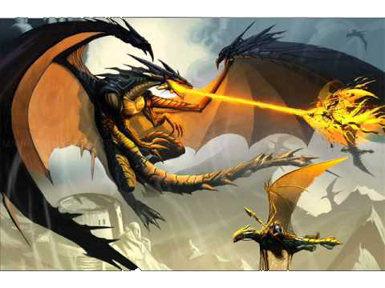

You have anger issues and you tend to take your anger out mainly on humans, but you also take your anger out on other dragons. This caused you to get in an argument with another dragon named Smerg. He also found out about Princess Andromeda, which only makes you even more upset because he could save her and rub it in your face.
However, you also heard that a group of your dragonmates were thinking of battling the next clan over because one of the enemy dragons stole treasure from the castle vault.
Do you save the princess and show up your friend or do you battle the neighboring clan and release your anger?
|
 | Save princess | Battle clan |
|---|